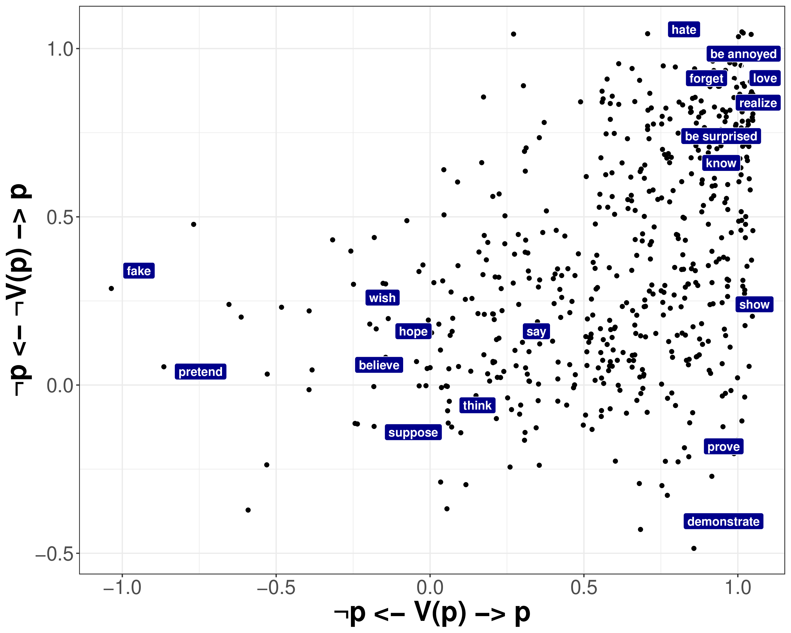
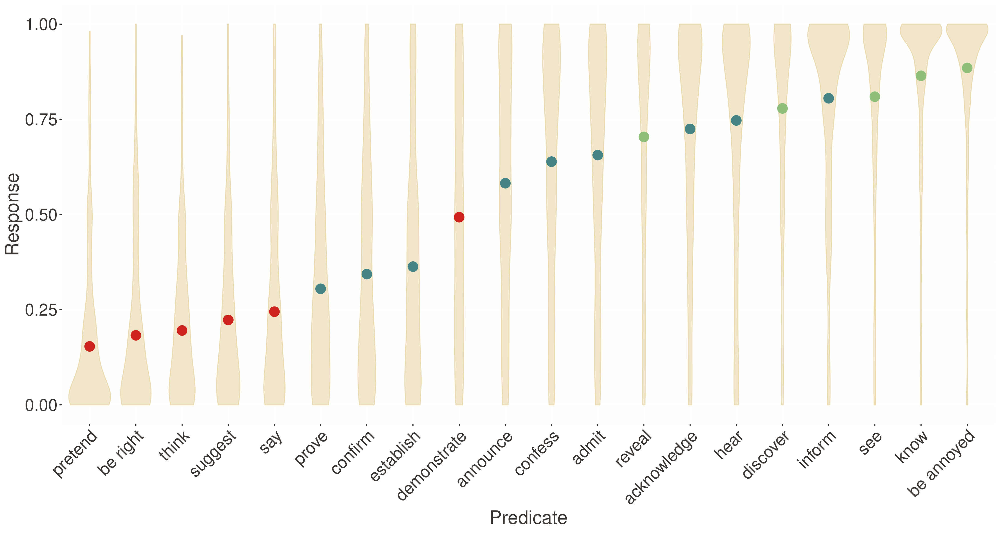
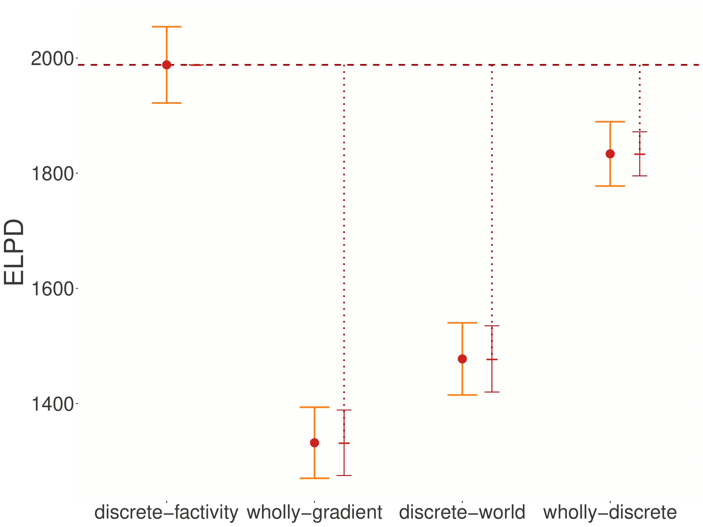
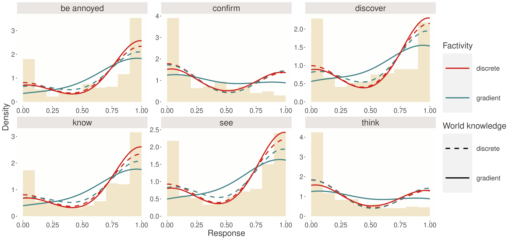
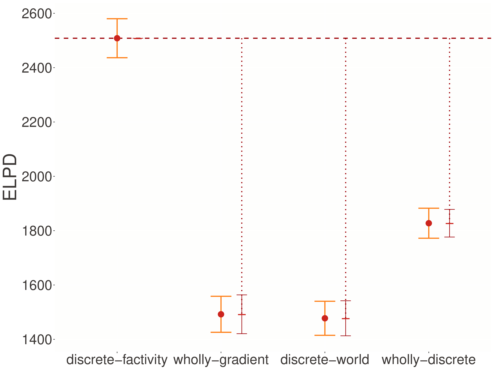
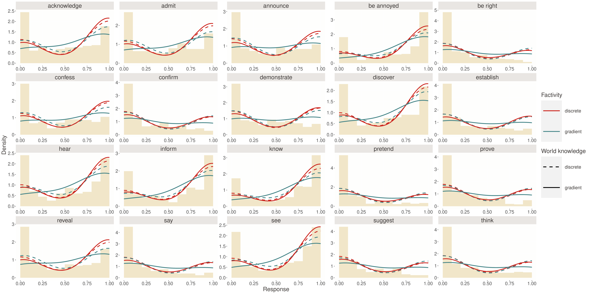
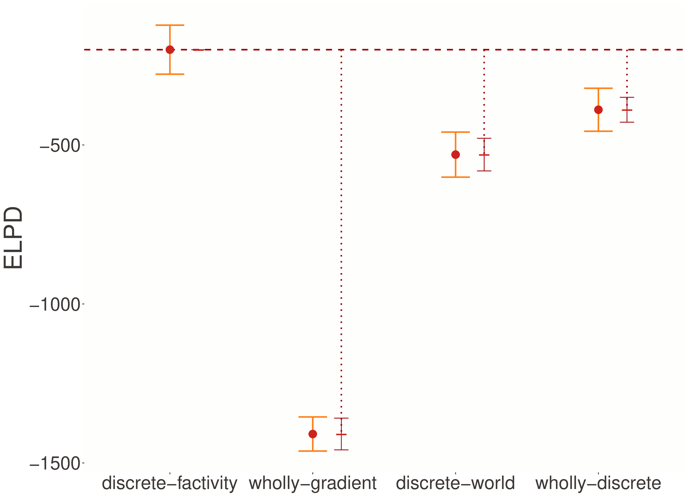

Factivity
The phenomenon
While gradience in adjectives arises from reasonably well-understood sources, factivity presents a deeper puzzle.
- Traditional view: Predicates either trigger presuppositions or they don’t
- Empirical reality: Pervasive gradience in projection judgments
- The challenge: What explains this gradience?
What makes factivity special
Factivity = property of predicates associated with presupposition that complements are true
Factive:
- Jo loved that Mo left. ⟹ Mo left.
- Jo didn’t love that Mo left. ⟹ Mo left.
- Did Jo love that Mo left? ⟹ Mo left.
Non-factive:
- Jo thinks that Mo left. ? Mo left.
- Jo doesn’t think that Mo left. ? Mo left.
The empirical landscape

MegaVeridicality dataset (White and Rawlins 2018)
An important distinction
Two importantly distinct questions:
- Whether the gradience suggests that there is no class (or subclasses) of factive predicates
- Whether the veridicality inferences triggered by a particular expression containing a particular clause-embedding predicate are themselves gradient
We’ll focus on the latter question
No classes?
Degen and Tonhauser (2022) argue no clear line separates factive from non-factive predicates

Continuous gradient of projection behavior
Yes. Classes.
Kane, Gantt, and White (2022) show this gradience is likely due to task effects and measurement noise

No classes?
Note: Some subclasses (e.g., cognitive factives like discover) appear to be associated with non-necessary factive inferences—Karttunen (1971) observed this 60+ years ago!
Two competing hypotheses
Discrete-factivity hypothesis
- Factivity is discrete—speakers either interpret as factive or not
- Gradience reflects uncertainty about interpretation
- Analogous to lexical ambiguity
Two competing hypotheses
Wholly-gradient hypothesis
- No discrete factivity property exists
- Predicates make gradient contributions to complement truth
- Aligned with Gradient Projection Principle
Experimental paradigms
The challenge
Judgments about certainty depend on:
- Properties of the predicate (factivity)
- World knowledge about proposition likelihood
Degen and Tonhauser (2021) developed a two-stage design to tease these apart
Stage 1: Norming study
Measure world knowledge independent of embedding predicates:
Question: How likely is it that Sophia got a tattoo?
Response:
impossible \(\hspace{17cm}\) definitely
Created high/low likelihood contexts for each proposition
Stage 2: Projection study
Embed propositions under predicates, ask about speaker certainty:
Utterance: Noah knows that Sophia got a tattoo.
Question: Is Noah certain that Sophia got a tattoo?
Response:
no \(\hspace{23cm}\) yes
Predicates tested
20 predicates spanning theoretical categories:
- Canonical factives: be annoyed, discover, know, reveal, see
- Non-factives:
- Non-veridical non-factive: pretend, say, suggest, think
- Veridical non-factive: be right, demonstrate
- Optionally factive: acknowledge, admit, announce, confess, confirm, establish, hear, inform, prove
World knowledge: gradient or discrete?
- First, test whether world knowledge itself is discrete or gradient.
- We developed a model similar to the norming model from yesterday.
- Not talking about it because it’s basically the same.
From PDS to Stan
Discrete-factivity in PDS
-- From Grammar.Lexica.SynSem.Factivity
"knows" -> [ SynSem {
syn = S :\: NP :/: S,
sem = ty tau (lam s (purePP (lam p (lam x (lam i
(ITE (TauKnow s)
(And (epi i @@ x @@ p) (p @@ i)) -- factive
(epi i @@ x @@ p)))))) -- non-factive
@@ s)
} ]ITE creates discrete choice based on TauKnow parameter
PDS compilation process
-- From Grammar.Parser and Grammar.Lexica.SynSem.Factivity
expr1 = ["jo", "knows", "that", "bo", "is", "a", "linguist"]
expr2 = ["how", "likely", "that", "bo", "is", "a", "linguist"]
s1 = getSemantics @Factivity 0 expr1
q1 = getSemantics @Factivity 0 expr2
discourse = ty tau $ assert s1 >>> ask q1
-- Compile to Stan using factivityPrior and factivityRespond
factivityExample = asTyped tau (betaDeltaNormal deltaRules . factivityRespond factivityPrior) discourseThis process transforms compositional semantics into Stan kernel models
The discrete-factivity kernel
PDS outputs this kernel model:
model {
// FIXED EFFECTS
v ~ logit_normal(0.0, 1.0); // probability of factive interpretation
w ~ logit_normal(0.0, 1.0); // world knowledge (from norming)
// LIKELIHOOD
target += log_mix(v,
truncated_normal_lpdf(y | 1.0, sigma, 0.0, 1.0), // factive branch
truncated_normal_lpdf(y | w, sigma, 0.0, 1.0)); // non-factive branch
}This captures discrete branching: with probability v, response is near 1.0; otherwise, it depends on world knowledge w
The full Stan implementation
Key factivity-specific components:
model {
// ... priors and hierarchical structure ...
for (n in 1:N) {
// Probability of factive interpretation
real verb_prob = inv_logit(verb_intercept[verb[n]] +
subj_intercept_verb[subj[n], verb[n]]);
// World knowledge probability
real context_prob = inv_logit(context_intercept[context[n]] +
subj_intercept_context[subj[n], context[n]]);
// MIXTURE LIKELIHOOD
target += log_mix(verb_prob,
truncated_normal_lpdf(y[n] | 1.0, sigma_e, 0.0, 1.0),
truncated_normal_lpdf(y[n] | context_prob, sigma_e, 0.0, 1.0));
}
}Hierarchical structure
The kernel is augmented with statistical machinery for real data:
- Hierarchical priors: Verb-specific and context-specific effects
- Integration with norming:
mu_omegaandsigma_omegafrom norming study - Subject-level variation: Random effects for individual differences
- Mixture likelihood: Core discrete-factivity structure (highlighted lines)
Wholly-gradient factivity in PDS
Alternative lexical entry branches on common ground indices:
-- From Grammar.Lexica.SynSem.Factivity
"knows" -> [ SynSem {
syn = S :\: NP :/: S,
sem = ty tau (lam s (purePP (lam p (lam x (lam i
(ITE (TauKnow i)
(And (epi i @@ x @@ p) (p @@ i)) -- factive
(epi i @@ x @@ p))))) @@ s)) -- non-factive
} ]Now TauKnow parameter varies by index rather than by discourse state
Gradient PDS compilation
The alternative implementation requires different prior structure:
-- Prior over indices encoded in common ground
factivityPrior = let' x (LogitNormal 0 1) (let' y (LogitNormal 0 1)
(let' z (LogitNormal 0 1) (Return (UpdCG (let' b (Bern x)
(let' c (Bern y) (let' d (Bern z) (Return (UpdTauKnow b
(UpdLing (lam x c) (UpdEpi (lam x (lam p d)) _0))))))) ϵ))))Bernoulli statement regulating factivity is part of the common ground definition
Gradient Stan kernel
model {
// FIXED EFFECTS
v ~ logit_normal(0.0, 1.0); // degree of factivity
w ~ logit_normal(0.0, 1.0); // world knowledge
// GRADIENT LIKELIHOOD
target += truncated_normal_lpdf(y | v + (1.0 - v) * w, sigma, 0.0, 1.0);
}Continuous computation: response = v + (1-v) * w
Understanding the gradient computation
Let’s trace through this computation:
- If
v = 0(no factivity):response = 0 + 1 * w = w(pure world knowledge) - If
v = 1(full factivity):response = 1 + 0 * w = 1(certain) - If
v = 0.5(partial factivity):response = 0.5 + 0.5 * w(boosted world knowledge)
This provides a “boost” to world knowledge but never forces certainty
Delta rules implementation
Both models require modifications to handle factivity parameters:
-- From Lambda.Delta: Computes functions on states
states :: DeltaRule
states = \case
TauKnow (UpdTauKnow b _) -> Just b
TauKnow (UpdCG _ s) -> Just (TauKnow s)
TauKnow (UpdQUD _ s) -> Just (TauKnow s)
-- ... other casesDiscrete model: TauKnow varies by discourse state
Gradient model: TauKnow varies by common ground indices
Alternative models for comparison
We also consider two models created by directly manipulating Stan code:
Wholly-discrete model
Both factivity and world knowledge are discrete
Discrete-world model
World knowledge discrete, factivity gradient
These serve as computational experiments but don’t correspond to theoretical proposals
Response distributions
Both models use truncated normal distributions:
real truncated_normal_lpdf(real y | real mu, real sigma, real lower, real upper) {
// Log probability of y under Normal(mu, sigma) truncated to [lower, upper]
real lpdf = normal_lpdf(y | mu, sigma);
real normalizer = log(normal_cdf(upper | mu, sigma) - normal_cdf(lower | mu, sigma));
return lpdf - normalizer;
}Truncation handles bounded slider scales where responses cluster at boundaries
Generated quantities
Both models compute posterior predictions:
generated quantities {
array[N] real y_pred;
for (n in 1:N) {
if (model_type == "discrete") {
int branch = bernoulli_rng(verb_prob);
if (branch == 1) {
y_pred[n] = truncated_normal_rng(1.0, sigma_e, 0.0, 1.0);
} else {
y_pred[n] = truncated_normal_rng(context_prob, sigma_e, 0.0, 1.0);
}
} else {
real response_prob = verb_prob + (1.0 - verb_prob) * context_prob;
y_pred[n] = truncated_normal_rng(response_prob, sigma_e, 0.0, 1.0);
}
}
}Model summary
Four models tested:
- Discrete-factivity: Factivity discrete, world knowledge gradient
- Wholly-gradient: Both factivity and world gradient
- Discrete-world: World knowledge discrete, factivity gradient
- Wholly-discrete: Both discrete
PDS derives the first two from theoretical commitments; the others are computational experiments
Model Results
Quantitative results

Discrete-factivity dramatically outperforms alternatives
Posterior predictive checks

How well do models capture response distributions?
Discrete-factivity captures characteristic dips mid-scale—mixture of factive (≈1) and non-factive (varies) interpretations
Why discrete-factivity succeeds
The discrete-factivity model captures non-monotonic response patterns:
- Canonical factives (know, discover): High probability of factive interpretation
- Non-factives (think, say): Low probability of factive interpretation
- Variable predicates (confirm, prove): Intermediate probabilities
Wholly-gradient model produces smooth, unimodal distributions—missing the bimodality
Robustness checks
Anti-veridicality

Pattern holds even with anti-veridicality component
Complete posterior predictive distributions

Posterior predictive distributions for all predicates
Implementation Challenges
Identifiability issues
In mixture models, components can sometimes “trade off”—different parameter combinations yield identical predictions.
Solutions:
- Informative priors using norming data to constrain world knowledge parameters
- Hierarchical structure with partial pooling across predicates and contexts
- Multiple contexts per predicate
Computational efficiency
Mixture models can be slow to fit or fail to converge.
Improvements:
- Non-centered parameterizations (as shown in transformed parameters blocks)
- Vectorization (operating on arrays rather than loops where possible)
- Warm starts (initializing chains near reasonable values)
Model validation
Beyond posterior predictive checks:
- Prior predictive checks: Ensuring priors generate reasonable data
- Residual analysis: Checking for systematic deviations
- Cross-validation: Using held-out data to assess generalization
Alternative response distributions
To ensure robustness, we tested ordered beta distributions:

Discrete-factivity maintains advantage regardless of response distribution
Theoretical Implications
For semantic theory
Factivity involves categorical semantic properties
- Gradience emerges from uncertainty about interpretation
- Not from gradient truth conditions
- Supports traditional presuppositional approaches
Evidence against wholly-gradient theories
- Gradient Projection Principle (Tonhauser, Beaver, and Degen (2018)) not supported
- Content doesn’t project “to the extent it is not at-issue”
For projection theories
Underlying mechanisms operate discretely
Whether QUD-based, at-issueness, or commitment-based:
- Categorical inclusion/exclusion of content
- Binary decisions about presupposition accommodation
- Discrete contextual factors determining interpretation
Implication: Projection mechanisms involve binary operations, not continuous scales
Methodological implications
- Aggregate ≠ individual gradience
- Population patterns can emerge from discrete processes
- Theory-driven models matter
- PDS maintains theoretical commitments
- Enables quantitative tests of linguistic hypotheses
- Multiple paradigms strengthen conclusions
- Convergent results across experiments
- Robust evidence for theoretical claims
Connections across phenomena
Adjectives:
- Gradient uncertainty from vagueness
- Unresolved indeterminacy
- Continuous threshold parameters
Factivity:
- Discrete uncertainty from interpretation
- Resolved indeterminacy
- Mixture model components
PDS compilation naturally reflects these distinctions
Looking forward
Future directions
- Extend to other projection phenomena (conventional implicatures, definite descriptions)
- Investigate individual differences in interpretation strategies
- Explore developmental and cross-linguistic variation
- Apply to real-world language understanding systems
The broader vision: Probabilistic semantics as a bridge between theoretical linguistics and computational modeling
Questions and discussion
Probabilistic dynamic semantics